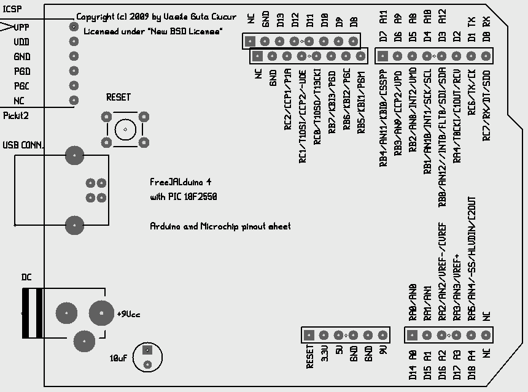

Jallib Starters Guide
Joep Suijs wrote an excelent "Starters Guide" which can be downloaded from here (see "Featured downloads" from the right sidebar). Also, at the same address, you can download another excellent book "Tutorial Book", with many nice projects. Both books are under heavy "development".
You must read them (at least, the "Starters Guide") but, what I want to show here, is the difference between a standalone program without bootloader and a program which use a bootloader, in both cases using FreeJALduino boards. Also it is supposing that in time you will gain new knowledge and you will want to write programs for your board but without the freejalduino4.jal library layout - using directly the pin definitions from jallib device files. So, we have three cases here and I will use a little example, as blinking a LED on RC2 pin, alias D13 on my boards, and alias pin_C2 on jallib device files.
We will use the following image as stylesheet because offer the original pinout description and also my board pinout:

Again, all examples use the same board. We will use the red LED from the board so,
move the blue jumper to right  . You will not need external power so move the green jumper to left, in "USB power source" mode
. You will not need external power so move the green jumper to left, in "USB power source" mode  .
.
1. Blink a LED - no bootloader, using jallib device file only for pin definitions
You will need to connect a Pickit2 or compatible to the ICSP connector of the board in order to program the board. The LED will start blinking instantly when you connect the board to USB.
include 18f2550 -- even though the external crystal is 20 MHz, the configuration is such that -- the CPU clock is derived from the 96 Mhz PLL clock (div2), therefore set -- target frequency to 48 MHz pragma target clock 48000000 -- oscillator frequency -- now, fuses (this is a required step for any program which don't use a bootloader) pragma target PLLDIV P5 -- divide by 5 - 20MHZ_INPUT pragma target CPUDIV P2 -- OSC1_OSC2_SRC_1_96MHZ_PLL_SRC_2 pragma target USBPLL F48MHZ -- CLOCK_SRC_FROM_96MHZ_PLL_2 pragma target OSC HS_PLL pragma target FCMEN DISABLED pragma target IESO DISABLED pragma target PWRTE DISABLED -- power up timer pragma target VREGEN ENABLED -- USB voltage regulator pragma target VOLTAGE V20 -- brown out voltage pragma target BROWNOUT DISABLED -- no brownout detection pragma target WDTPS P32K -- watch dog saler setting pragma target WDT DISABLED -- no watchdog pragma target CCP2MUX pin_C1 -- CCP2 pin pragma target PBADEN DIGITAL -- digital input port<0..4> pragma target LPT1OSC LOW_POWER -- low power timer 1 pragma target MCLR EXTERNAL -- master reset on RE3 pragma target STVR DISABLED -- reset on stack over/under flow pragma target LVP DISABLED -- no low-voltage programming pragma target XINST ENABLED -- extended instruction set pragma target DEBUG DISABLED -- background debugging pragma target CP0 DISABLED -- code block 0 not protected pragma target CP1 DISABLED -- code block 1 not protected pragma target CP2 DISABLED -- code block 2 not protected pragma target CP3 DISABLED -- code block 3 not protected pragma target CPB DISABLED -- bootblock code not write protected pragma target CPD DISABLED -- eeprom code not write protected pragma target WRT0 DISABLED -- table writeblock 0 not protected pragma target WRT1 DISABLED -- table write block 1 not protected pragma target WRT2 DISABLED -- table write block 2 not protected pragma target WRT3 DISABLED -- table write block 3 not protected pragma target WRTB DISABLED -- bootblock not write protected pragma target WRTD DISABLED -- eeprom not write protected pragma target WRTC DISABLED -- config not write protected pragma target EBTR0 DISABLED -- table read block 0 not protected pragma target EBTR1 DISABLED -- table read block 1 not protected pragma target EBTR2 DISABLED -- table read block 2 not protected pragma target EBTR3 DISABLED -- table read block 3 not protected pragma target EBTRB DISABLED -- boot block not protected -- delay library include delay enable_digital_io() -- all pins are now digital pin_C2_direction = OUTPUT -- set pin RC2 as output forever loop pin_C2 = HIGH delay_1ms(250) -- delay 250 milliseconds pin_C2 = LOW delay_1ms(250) end loop --
2. Blink a LED - bootloader, using jallib device file only for pin definitions
After uploading the program via USB using the bootloader, reset the board and LED will start blinking after 10 seconds.
include 18f2550 -- even though the external crystal is 20 MHz, the configuration is such that -- the CPU clock is derived from the 96 Mhz PLL clock (div2), therefore set -- target frequency to 48 MHz pragma target clock 48000000 -- oscillator frequency -- now, fuses (this is a required step for any program which don't use a bootloader) pragma fuses no -- yes, no fuses, we use a bootloader -- Now we tell to compiler that the application use bootloader and must start at 0x0800 pragma bootloader loader18 -- delay library include delay enable_digital_io() -- all pins are now digital pin_C2_direction = OUTPUT -- set pin RC2 as output forever loop pin_C2 = HIGH delay_1ms(250) -- delay 250 milliseconds pin_C2 = LOW delay_1ms(250) end loop --
3. Blink a LED - bootloader, using FreeJALduino pin definitions
After uploading the program via USB using the bootloader, reset the board and LED will start blinking after 10 seconds.
include freejalduino4 -- the board pinout definitions, PICtarget, clock and boot -- delay library include delay enable_digital_io() -- all pins are now digital D13_direction = OUTPUT -- set pin RC2/D13 as output forever loop D13 = HIGH delay_1ms(250) -- delay 250 milliseconds D13 = LOW delay_1ms(250) end loop --
Note: